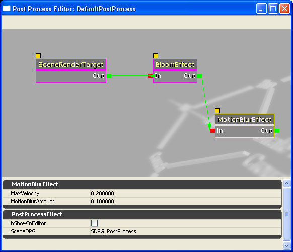

UDN
Search public documentation:
PostProcessEditorUserGuideCH
English Translation
日本語訳
한국어
Interested in the Unreal Engine?
Visit the Unreal Technology site.
Looking for jobs and company info?
Check out the Epic games site.
Questions about support via UDN?
Contact the UDN Staff
日本語訳
한국어
Interested in the Unreal Engine?
Visit the Unreal Technology site.
Looking for jobs and company info?
Check out the Epic games site.
Questions about support via UDN?
Contact the UDN Staff
后期处理编辑器用户指南
概述
打开后期处理编辑器
后期处理编辑器界面

菜单条
窗口
- Properties(属性) - 切换属性面板的显示状态。
图表面板
这是后期处理编辑器的核心部分。它按照从右到左的顺序显示了后期处理特效链，并且它使用的界面和很多其它的基于节点的虚幻编辑器一样。默认情况下，它有一个节点SceneRenderTarget(场景渲染目标)，它是当前被渲染的场景，没有应用任何特效。您可以把新的特效连接到这个节点上来改变它在屏幕上的显示效果。关联菜单
右击编辑器打开关联菜单，它显示了一系列可以添加到节点图表中的节点。| 名称 | 描述 |
|---|---|
| MaterialEffect (材质特效) | 用户创建的材质。 |
| MotionBlurEffect (运动模糊特效) | 基于物体的运动速度使场景模糊。 |
| UberPostProcessEffect(Uber后期处理特效) | 景深、亮度溢出及色调映射的最优化组合。 |

属性面板
属性面板显示了图表面板中当前选中的节点的属性。可以编辑这些属性来修改节点的特效，最终修改整个后期处理特效。创建特效
默认
[Engine.SeekFree] DefaultPostProcess=SomePackage.SomeEffect
PostProcessVolumes(后期处理体积)
Interpolation Duration(插值时间)
使用Matinee控制特效
使用游戏脚本控制后期处理特效
ULocalPlayer.bOverridePostProcessSettings 属性，您可以覆盖当前玩家正在使用的后期处理数据。那么，玩家的 FCurrentPostProcessVolumeInfo CurrentPPInfo 结构将会被填充为这些新的数值以及对这些数值变换进行插值的时间。